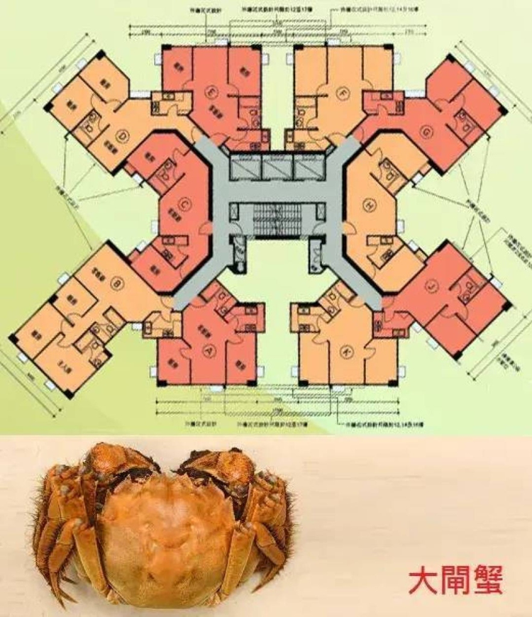

正在构筑一座湖畔居所
沿着蟹形的轮廓，走进十处湖畔日常。

中央交通核、左右对称展开的住宅翼、十户独立空间，以及向外放射的斜向轮廓。
以湖畔度假住宅为设定，加入暖白石墙、橡木地板、铜色屋面、家具、植被与水景。
原图像素有限，无法可靠读取标注。场景按可辨认的轮廓和空间关系进行概念性重建；尺寸、家具与景观由创作补全。
鼠标左键拖动旋转，滚轮缩放，右键拖动平移。触屏单指旋转、双指缩放。
点击场景捕获鼠标。WASD 移动，鼠标看向，Shift 加速；E 开关附近的门或灯。Esc 释放鼠标。触屏使用左侧摇杆与右侧滑动。
切换屋顶查看建筑外观；切换午后、黄昏、夜景。平面鸟瞰会自动打开屋顶。
右下角相机按钮保存无界面的 PNG。按 H 隐藏界面，按 R 回到全景。
这是可实时交互的 WebGL 建筑场景。桌面浏览器与独立显卡能获得更好的画质和流畅度。